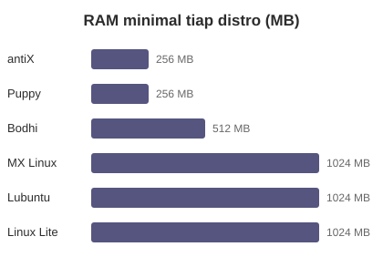
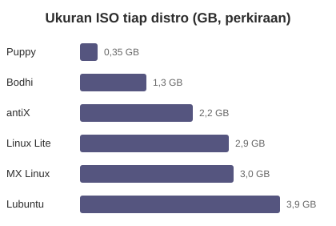

Rekomendasi Linux ISO Kecil dan Ringan untuk Laptop Lama (Kentang)
Home > Tutorial > Rekomendasi Linux ISO Kecil dan Ringan untuk Laptop Lama (Kentang)
Arsip
- Instal Apache, MySQL, PHP dan phpMyAdmin di Archlinux 2021
- Konfigurasi Virtual Host Apache Server Di ArchLinux 12 Jun 2021
- Cara Deploy Blog Statis ke GitHub Pages 17 Nov 2026
- Cara Daftar make.fun dengan Agent dan Biar Agent Cari Bounty Sendiri 17 Nov 2026
- Cara Berburu Bug Bounty dengan Agentic-Bug-Hunter (Gratis, AI Lokal) 18 Nov 2026
- Cara Pasang Google Analytics 4 dan Tag Manager di Blog Statis 26 Nov 2026
- Cara Optimasi SEO Blog GitHub Pages 26 Nov 2026
- Cara Ikut Bounty make.fun Pakai AI Agent 26 Nov 2026
- Cara Bikin Bot Tank di battle.training 26 Nov 2026
- Cara Bikin USB Bootable Ventoy (Kedetek di HP dan Laptop) 26 Nov 2026
- Rekomendasi Linux ISO Kecil dan Ringan untuk Laptop Lama (Kentang) 28 Nov 2026
Laptop lama bukan berarti laptop mati. Kebanyakan laptop "kentang" itu lemot bukan karena hardwarenya rusak, tapi karena sistem operasinya terlalu berat buat spesifikasi yang ada. Ganti ke Linux yang ringan, dan laptop berumur 10–15 tahun masih bisa dipakai buat browsing, ngetik, nonton video, sampai kerja ringan.
Di tutorial ini ada 6 distro Linux yang
ISO-nya kecil, RAM-nya hemat, dan masih aktif dirawat sampai 2026. Semuanya gratis, dan semuanya bisa dicoba dulu lewat live USB sebelum di-install.

Gambar 1: RAM minimal tiap distro (MB) — makin kecil makin ringan.
Cara Pilih Cepat
RAM di bawah 1 GB → antiX atau Puppy Linux.
RAM 1–2 GB → Bodhi atau MX Linux.
RAM 2–4 GB → Lubuntu atau Linux Lite.
Laptop masih 32-bit → antiX, Puppy, atau MX Linux.
Baru pindah dari Windows → Linux Lite atau MX Linux.
Perbandingan Singkat
| Distro | RAM minimal | ISO | 32-bit |
|---|---|---|---|
| antiX 26 | 256 MB | ±2,2 GB | Ya |
| Puppy Linux | 256 MB | ±0,35 GB | Ya |
| Bodhi Linux 7.0 | 512 MB | ±1,3 GB | Tidak |
| MX Linux | 1 GB | ±2–3 GB | Ya |
| Lubuntu 26.04 LTS | 1 GB | ±3,9 GB | Tidak |
| Linux Lite 7.x | 1 GB | ±2,9 GB | Tidak |

Gambar 2: Ukuran ISO tiap distro (GB, perkiraan).
1. antiX 26
Logo antiX Linux.
Paling ringan buat hardware paling tua. antiX berbasis Debian Stable tanpa
systemd, pakai window manager IceWM yang sangat hemat sumber daya, dan masih mendukung prosesor 32-bit.
RAM minimal: 256 MB (512 MB disarankan) · Ukuran ISO: ±2,2 GB (edisi full; ada edisi base dan core yang lebih kecil) · 32-bit: Ya · Basis: Debian Stable (tanpa systemd) · Desktop: IceWM
Cocok buat: laptop di bawah 1 GB RAM dan mesin 32-bit.
Download di situs resmi
2. Puppy Linux (BookwormPup64)
Logo Puppy Linux.
ISO paling kecil — jalan langsung dari RAM. Puppy Linux boot ke RAM, jadi setelah dimuat, kecepatan harddisk sudah tidak terlalu berpengaruh. Cocok buat live USB dan laptop yang harddisk-nya sudah lemah.
RAM minimal: 256–512 MB · Ukuran ISO: ±300–400 MB · 32-bit: Ya · Basis: Debian/Ubuntu (tergantung edisi) · Desktop: JWM
Cocok buat: live USB, laptop yang harddisk-nya sudah lemah, dan rescue.
Download di situs resmi
3. Bodhi Linux 7.0

Tampilan desktop Bodhi Linux 7.0.
Ringan tapi tetap enak dilihat. Bodhi Linux pakai desktop Moksha yang tampilannya rapi, di atas basis Ubuntu LTS sehingga ketersediaan paketnya besar.
RAM minimal: 512 MB · Ukuran ISO: ±1,3 GB · 32-bit: Tidak (7.0 hanya 64-bit) · Basis: Ubuntu LTS · Desktop: Moksha
Cocok buat: laptop 1–2 GB yang mau tampilan rapi.
Download di situs resmi
4. MX Linux
Logo MX Linux.
Paling seimbang: ringan tapi lengkap. MX Linux berbasis Debian Stable dengan desktop XFCE, ringan buat mesin 2 GB tapi cukup rapi buat dipakai harian.
RAM minimal: 1 GB · Ukuran ISO: ±2–3 GB · 32-bit: Ya (MX-23) · Basis: Debian Stable · Desktop: XFCE
Cocok buat: pemakaian harian di laptop 1–2 GB.
Download di situs resmi
5. Lubuntu 26.04 LTS
Logo Lubuntu.
Ubuntu resmi yang paling ringan. Lubuntu adalah flavor resmi Ubuntu dengan desktop LXQt — perintah dan repositorinya sama seperti Ubuntu, tapi jauh lebih hemat sumber daya. Dukungan jangka panjang sampai April 2029.
RAM minimal: 1 GB · Ukuran ISO: ±3,9 GB · 32-bit: Tidak · Basis: Ubuntu LTS · Desktop: LXQt
Cocok buat: yang sudah kenal Ubuntu dan mau dukungan jangka panjang.
Download di situs resmi
6. Linux Lite 7.x
Logo Linux Lite.
Paling mirip Windows, paling gampang buat pemula. Linux Lite berbasis Ubuntu LTS dengan desktop XFCE, tampilannya dibuat supaya pengguna Windows langsung betah: taskbar di bawah, menu mirip Start, dan installer yang jelas langkahnya.
RAM minimal: 1 GB (nyaman 2 GB) · Ukuran ISO: ±2,9 GB · 32-bit: Tidak · Basis: Ubuntu LTS · Desktop: XFCE
Cocok buat: mantan pengguna Windows yang baru pindah ke Linux.
Download di situs resmi
Yang Tidak Masuk List
- Tiny Core Linux —
ISO-nya paling kecil (±20 MB untuk edisi Core), tapi ini distro buat pengguna mahir: tidak ada desktop lengkap bawaan, hampir semuanya dipasang manual.
- Alpine Linux — kecil dan cepat, tapi dibuat untuk server dan container, bukan buat desktop pemula.
- Xubuntu — masih satu keluarga ringan, tapi butuh RAM 4 GB ke atas biar nyaman, jadi tidak masuk list buat laptop kentang.
Tips
- Coba live USB dulu sebelum install — boot dari flashdisk dan rasakan sendiri kecepatannya. Cara bikin USB bootable-nya ada di tutorial Cara Bikin USB Bootable Ventoy.
- Cek dulu laptopmu 32-bit atau 64-bit — salah pilih
ISO, installer tidak bisa jalan.
- Backup data penting sebelum install — proses install menghapus isi disk.
- Browser modern tetap rakus RAM — di laptop 1 GB, tutup tab yang tidak dipakai dan jangan buka terlalu banyak tab sekaligus.
Referensi
- https://antixlinux.com
- https://puppylinux.com
- https://www.bodhilinux.com
- https://mxlinux.org
- https://lubuntu.me
- https://www.linuxliteos.com
- https://en.wikipedia.org/wiki/Light-weight_Linux_distribution
Suka tutorial ini? Dukung penulis biar makin banyak tutorial gratis.
Dukung via Saweria